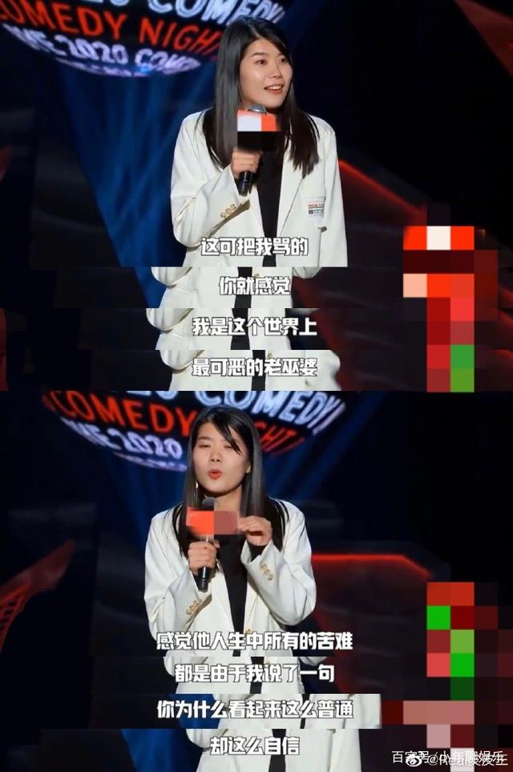

为何讨论社会事件
随着社会的变化，女性从为家庭主妇声讨、为女性争取选举权到获得女性职场平等性，女性逐渐崛起。在这样的情况下，女性逐渐被更多人看到，女性主义也逐渐被人们熟知，进一步的，相关的社会事件发生。 越来越多的人，借助社会事件来宣传自己的观点。“女司机”、“像个女的”等等的词语，在日常生活中不难看到。同一个事件，事件中的主人公性别对调，人们对事件的评价就会大相径庭。例如家暴事件，丈夫家暴妻子，更多的人仿佛觉得这是司空见惯的事情， 而要是换成了妻子家暴丈夫，人们很大可能会指责这位妻子，怜爱这位男性。我希望，大家可以跳出来事件中人物的性别来看待发生的每一件事，不能因为性别而先入为主下定结论。
“定义和区分女人的参照物是男人，而定义和区分男人的参照物却不是女人。” / “当一个人（或一群人）被置于低人一等的处境，实际情况就只能是他是低人一等的。”——《第二性》
清华学姐事件
11月17日下午，清华一女生在朋友圈发布自己被性骚扰的事件和男方当事人的学院、年级和姓名信息， 当天晚上，女生将自己的前一条朋友圈隐藏，并告知朋友圈已经在保安处登记。18日下午，女生查完监控后通过导师向男生转达道歉并获取原谅， 在朋友圈及校园树洞发布对男生的道歉并反思了自己的冲动。
然而二十号左右#清华学姐#却被刷上了热搜，此事件在知乎、豆瓣和微博上掀起了一次群体舆论的狂欢， 女方当事人被取侮辱性外号进行嘲讽，甚至被网络用户“人肉”，搜集个人隐私并发布到网络上并针对外貌等进行贬低和嘲讽。
杨笠被抨击
杨笠因为在《脱口秀大会》第二季中怼天怼地的言论，迅速走红。她从女性视角出发，不仅讲述了女性的相貌焦虑，遭遇的偏见和性别歧视， 还对“普信男”进行了抨击。她的一系列观点精准踩到了大众的敏感点，一时间争议来势汹汹。 彻底把“两性问题”的讨论推向高潮，源于杨笠在2020年《脱口秀反跨年表演》中的一场演出，那次更多引发的是关于“脱口秀边界”的争论。 在跨年表演中的段子里，她说：“没有男人，我会过上平静幸福的生活”“男人还有底线？”此话一出，再次被网友刷屏，纷纷表示“被笑死”，而有些人也敏感地觉察到——“被冒犯”了。 第二天，池子在微博发声“脱口秀肯定不是杨笠那样”，公开抵制和反对杨笠，登上热搜。
至此，网络上声讨杨笠的浪潮彻底被掀翻，甚至有人以“演出内容涉嫌性别歧视，多次辱骂全体男性， 煽动群众内部矛盾，制造性别对立，不利于中国特色社会主义和谐发展”为由向广电总局举报了杨笠。 在此期间，不少明星站出来声援杨笠。 2020年12月27日，女星姚晨发了一条微博称：“每当这样一份冒犯被慢慢接受，我们的世界也就多了一份关于生命的、人性的可能。”
杨笠曾经在采访中说过，谈论这些话题并不是想替谁发声，只是想让大家更包容一些，把困惑和不舒适的地方说出来，让大家一起聊一聊。 数次发生在杨笠身上的争议，也反映出如今人们对两性议题的普遍关注。正因为每个人持有的观点不同，表达异见才显得难能可贵。
Brave Girls 面包代言
2021年5月14日，韩国女团Brave Girls拍摄播出的广告被指侮辱男性，品牌方已经紧急撤下相关广告。
Brave Girls上个月刚刚与某食品品牌签订代言协议并拍摄了该品牌的面包广告， 但广告发布后不久就有人指出Brave Girls成员金玟莹在广告中左手的姿势与韩国极端女权份子用来侮辱男性的手势一模一样。 因为该品牌此前就曾在旗下香肠产品的广告中使用相同的手势，人们质疑该品牌是有意侮辱男性。 随着争议扩大，该品牌方紧急撤下了Brave Girls引发争议的广告，并称公司绝对无意引发男女对立， 如果再有人散布公司故意侮辱男性等不实传闻，将被追究法律责任。

谭维维《小娟》
2020年末，谭维维携尹约等共同创作了歌曲《小娟》，“小娟”是无数遭遇家暴的女性的化名。
歌词中影射了杭州女子失踪案、上海冰柜藏尸案、温州女企业家遭男友拳击死亡、女子拒求婚被泼硫酸等恶性事件，每一句歌词，都是一个真实发生过的惨剧。 《小娟》是今年华语乐坛最震撼的作品之一，因为它摆脱了小情小爱，顾影自怜，是在为社会、为人群呐喊。
在收录这首歌的专辑《3811》中，还讲述了另外10个极具代表性的女性故事。 追爱的中年女售票员《章存仙》、唐代传奇女子《鱼玄机》、嫁给一棵树的彝族少女《阿果》、为爱殉情的《如花》等等。